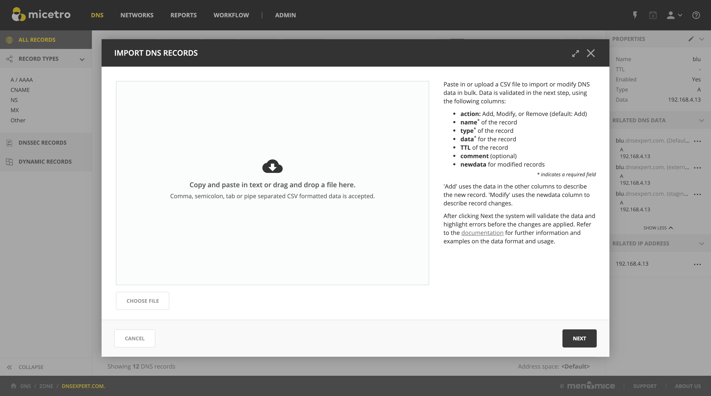

Import DNS Records
DNS Records can be imported in the Micetro Web Application.
Prerequisites
The user importing must have access to edit records in the zones used in the import.
See Access control for further information on access controls.
Import task
The action to import DNS Records is available from the menu in the DNS zones list, that allows importing records to different zones at the same time.
is also available from within a specific zone, which allows importing records to that zone only.
{kind=link}
DNS bulk import format
Note
When choosing files, only plaintext CSV/TSV/TXT files are accepted. Excel spreadsheets need to be exported to one of these formats prior to importing.
Header line
The first line of the data must be the header line, containing the name of the fields in the corresponding columns of the lines after it. Some of the fields refer to built-in system fields, while the rest of the fields are matching the custom properties that are defined for the object type in question.
Tip
It’s only necessary to include the fields that need to be imported/updated, except for properties that are defined as mandatory, or required to be able to identify the object to import.
The field names in the header line are not case sensitive. For example, “title” will be correlated to the custom property “Title”.
Built-in fields
- action
(Default: Add) Add, Modify, or Remove.
Tip
The following aliases can be also used:
Insert/Create = Add
Update/Change = Modify
Delete/Del = Remove
- name
(required) Hostname of the record.
- zone
The zone containing the record.
- authority
If multi-master, the authority of the zone.
- view
If multi-master, the view containing the zone.
- forest
If multi-master, the forest of the zone.
- type
(required) The type (A, CNAME, MX, etc.) of the record.
- data
(required) The data (IP for A/AAAA, the target A/AAAA record for CNAME, etc.) for the record.
- TTL
The Time-to-Live value of the record. Time value defaults to seconds, but hour (i.e. 1H), day (i.e. 2D), week (i.e. 3W), or month (i.e. 4M), or year (i.e. 5Y) can be used.
- comment
Optional save comment.
- newdata
If modifying an existing record, the new data to replace the old value.
Examples
Add records
Import A record ‘viola’ to the zone ‘illyria.coast’:
name,type,data
viola.illyria.coast.,A,16.0.2.2
Import A record ‘viola’ to ‘illyria’ providing a view name:
name,type,data,view
viola.illyria.,A,16.0.2.2,first-folio
Import A record ‘viola’ to ‘illyria.palace’ to the authority of ‘orsino’:
name,type,data,authority
viola.illyria.palace.,A,16.0.2.2,orsino
Import A record ‘cesario’ to ‘olivia.palace’, when zone and authority are specified:
name,type,data,authority,zone
cesario.olivia.palace.,A,16.0.2.2,illyria,orsino.palace
Modify records
Modify IP address for the A record ‘viola’:
action,name,type,data,newdata
modify,viola.illyria.coast.,A,16.0.2.2, 20.21.9.6
Modify IP address for the A record ‘viola’ but leave the TTL as it was:
action,name,type,data,newdata,ttl
modify,viola.illyria.coast.,A,16.0.2.2, 20.21.9.6,
Modify IP address and TTL for the A record ‘viola’:
action,name,type,data,newdata,ttl
modify,viola.illyria.coast.,A,16.0.2.2, 20.21.9.6, 2H
Remove records
Remove A record ‘malvolio’:
action,name,type,data
remove,malvolio.olivia.palace.,A,16.0.2.2